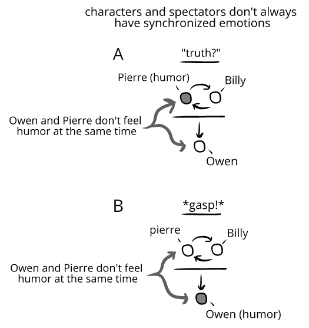
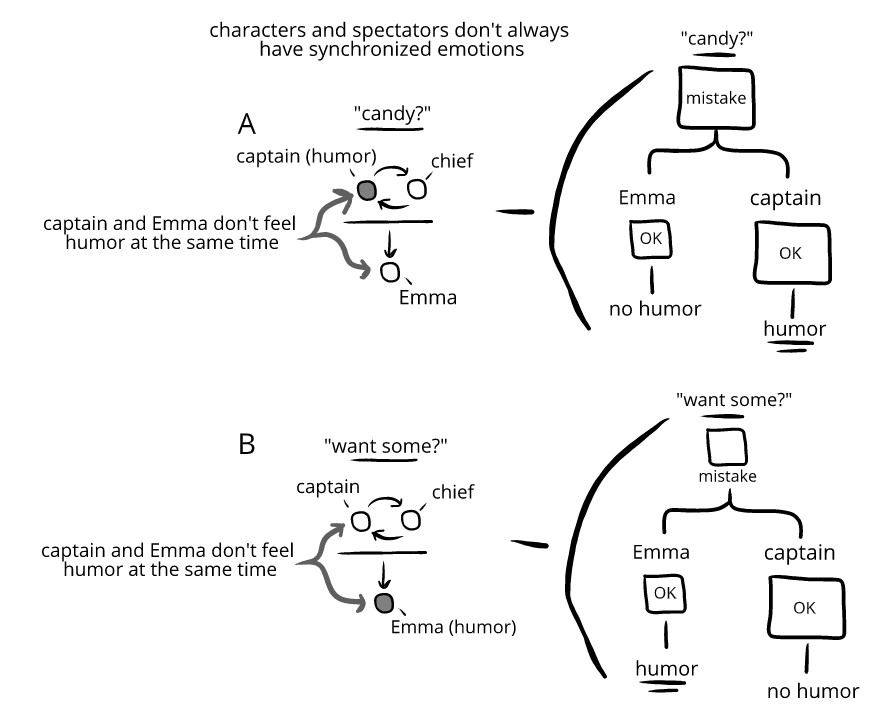

Desynchronized evaluations
In spectator entertainment, the audience and the characters don't usually feel the same thing at the same time—they're emotionally desynchronized.
Consider:
In interpersonal orientations, there's a mutual priority that leads to synchronization around evaluations.
But in spectator orientations, the one-sided priority leads to desynchronized evaluations.
This is often obvious in comedies. While the characters are perplexed, bickering, complaining, crying, making mistakes, getting hurt, and so on—the audience feel humor:

Consider:
We often haven't thought about how rarely characters and audiences laugh together. But once it's pointed out, we see it everywhere!
Often, we alternate between the characters feeling humor alone and us feeling humor alone:
Owen is watching Animated Guy.
Billy the Dog: “Well, maybe you should just go to Leanne and tell her the truth.”
A. Pierre: “heeheeheeheeheehee” (←Pierre laughs when Owen doesn’t) “Oh wait, you’re serious? Oh my god Billy. We can’t tell Leanne the truth. She’d skin me! Tell you what. Let’s tell her a bigger lie instead.”
Billy: “What, Pierre, no!”
Pierre: *already in the kitchen talking to Leanne*
B. Billy: *gasps*
Owen: *laughs* (←Owen laughs when Pierre and Billy don’t)

Emma is watching Fired Fireman 4. Space captain Karl Starbreaker comes across Chief sitting on some stairs eating some bright-colored candy.
Karl Starbreaker: *standing heroically* (condescendingly) “You’re eating candy?”
Chief: *munching* “Yes. Want some?” *holds out box*
Karl Starbreaker: *throws back head* *laughs* *laughs more* (←captain laughs when Emma doesn’t) (suddenly sober) *sits down* (sadly) “Yes.”
Chief shakes some colored candies into his cupped hands.
Emma: *laughs* (←Emma laughs when captain doesn’t)

In a conversation, we're pulled toward synchronization. One of spectator entertainment's distinctive qualities is that we can have some distance from thil pull.
If spectator entertainment tried to keep the audience and characters synchronized, it would forfeit one of the distinctive opportunities of spectator entertainment.
Consider:
Sometimes spectator entertainment tries to make the audience feel the same emotion as a character, but this isn't the general goal of most spectator entertainment—and especially not the goal of most comedies.
Laugh tracks. It was an odd experience to transition from the universal experience of live theaters to radio or television. Suddenly, you were supposed to laugh alone or with a few other people—in an otherwise empty room! It was an isolating, often unsettling transition.
To ease this transition, showrunners used laugh tracks or live audiences to simulate being in an audience. One outcome of this was maintaining the familiar cadence of theater dialogue. ("Line of dialogue" *pause for laughter* "Line of dialogue" *pause for laughter.*)
The laugh track also helped audiences know who to synchronize with. If someone is watching a sitcom and a character comes in and glumly says "I was fired today"—we could synchronize toward the character and feel glum. But with a laugh track, we'll synchronize our evaluations with the imaginary "audience" and feel humor.
Over time, TVs were no longer seen as replacing live entertainment—they just were entertainment. People no longer needed a laugh track to feel detached together from the surreal events depicted. And slowly, laugh tracks began being seen as increasingly archaic or even bizarre—and an obstacle of new changes to styles and genres.